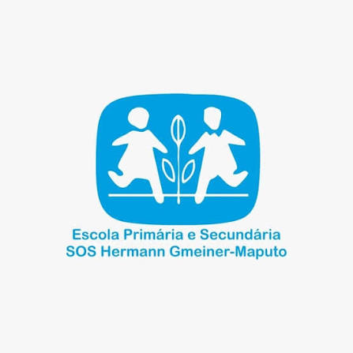
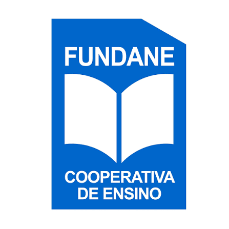
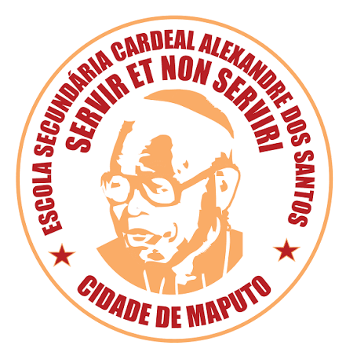
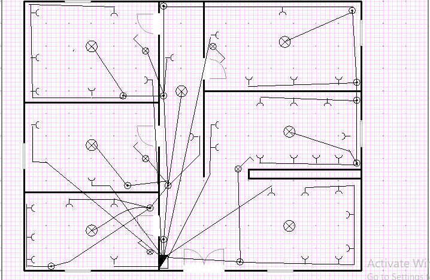
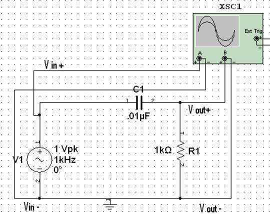
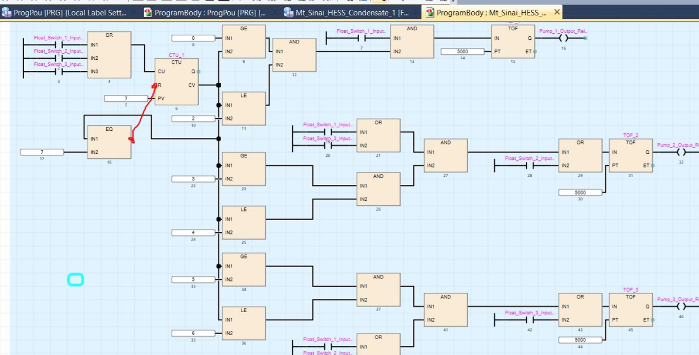
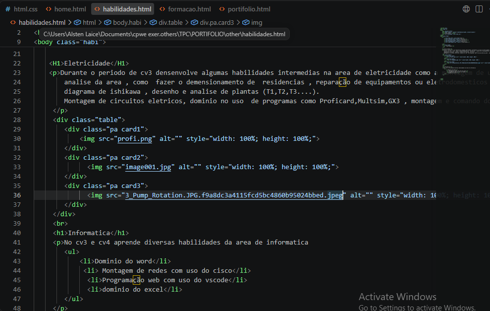
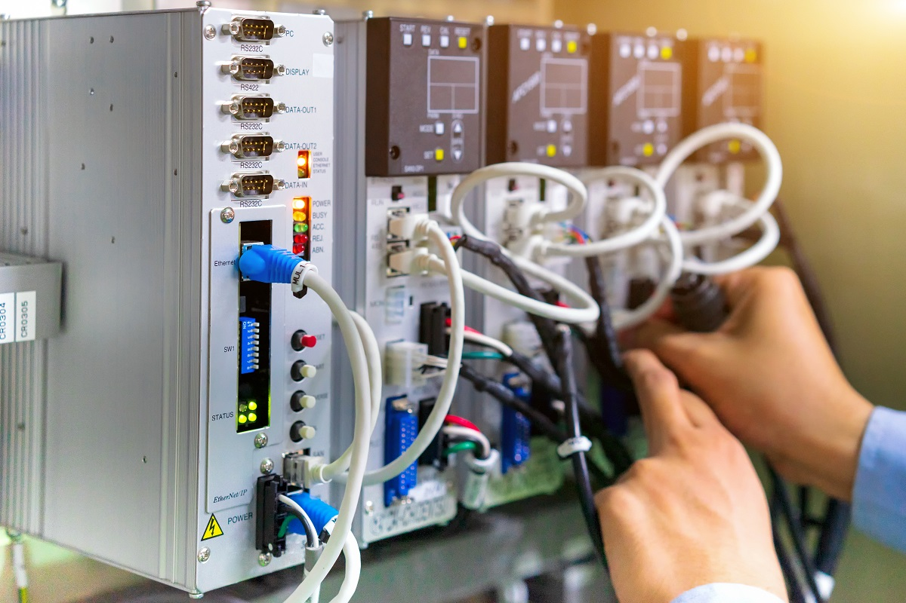

Meu nome e Alsten carlos laice sou estudante do ITC
atualment no cv4 tenho 17 anos , nascido em 22 de Fevereiro de 2009 em Maputo, vivo na zona de kumbeza, antes de entrar no
ITC estudei ate a 10° Classe em diversas escolas, no ITC estou a realizar o curso de Tecnico de suporte informatico nesse periodo especializei-me
em criacāo de paginas web , criacāo de publicidades com uso do powerpoint
Hobbies
Apos os estudos escotou musica para relaxar a mente apos , ou durante a realixacao de um trabalho , mas escotou com mais frequencia em momentos de lazer
Nos sabados e domingos pratico desporto como maneira de preservar a saude, como jogar bola e caminhadas
Em certos momentos estudou um pouco de html e CSS de maneira a melhorar as minhas habilidades em criacao de pagina e retirar a minha dependencia em IA
Em tempos livres tambem gosto de jogar alguns jogos virtuais para me diverter
No final da tarde e de noite gosto de assister jogos de football principalmente Premier league , Laliga,Seria A
Gossto de ver contrudos nas redes sociais como forma de passar o tempo
Formação Academica
Durante o meu periodo de ensino ate hoje passei por diversas escolas de ensino de qualidade que me permitiram adquirir conhecimento para estar onde estou agora

Fui na Escola Primaria e Secundaria SOS que tive o meu primeiro contacto com a educação basica , fui na SOS que comecei a densenvolver algumas habilidades escritas e em somatorio de contas, estudei entre os anos de 2014 a 2016 onde nesse periodo estudei da 1 o classe a 3 o classe

Apos estudar na SOS fui para o Externato Fundane melhorar e aprefeiçar o meu conhecimento no Externato fundane estudei da 4 o classe a 8 o classe

No Ecas estudei da 9 a 10 classe fui no Ecas realizei o meu ultimo exame no ensino basico no fim disso fui para o ensino tecnico no ITC
Apos acabar o ensino basico entrei no ITC em 2025 no curso de Eletricidade no cv3 em busca de conhecimentos tecnicos e prsticos como maneira de entrar na faculdade com conhecimento a cerca do meu curso , atualmente
estou no cv4 fazendo o curso de Informatica
Habilidades
Eletricidade
Durante o periodo de cv3 densenvolve algumas habilidades intermedias na area de eletricidade como a montagem de um vircuito eletrico em uma residencia
analise da area , como fazer o demensionamento de residencias , reparação de equipamentos ou eletrodomesticos eletricos com o uso das tecnicas do
diagrama de ishikawa , desenho e analise de plantas (T1,T2,T3....).
Montagem de circuitos eletricos, dominio no uso de programas como Proficard,Multsim,GX3 , montagem e comando do plc com auxilio do GX3



Informatica
No cv3 e cv4 aprende diversas habilidades da area de informatica
Dominio do word
Montagem de redes com uso do cisco
Programação web com uso do vscode
dominio do excel

Meus projectos
Durante o meu periodo no ITC estudei e tive varios modulos no CV3 fiz alguns projectos a ver com eletricidade e no CV4 realizei mais projectos de topicos diversificados como ingles e projecto de estatistica
Cultura
Este projecto tem como objectivo falar dos costumes da culturais de Gaza e Maputo com o uso da lingua Inglesa

Dominio de maquinas industriais
Este projecto busca falar sobre o plc que e uma maquina muito usada na industria o projecto demostra algumas imagens so uso do Multsim
Iluminacao em areas externas
Este projecto tem o foco de resolver os problemas de Iluminacao em areas externas de modo a evitar acidentes ou enventual perigo
Ate o presente momento tenho poucos trabalhos que abrangem a area de informatica , mais tenho dois projectos um powwrpoint publicitario e um projecto para implimentacao de wifi em uma residencia
publicidade
este projecto e uma publicidade feita para uma empresa ficticia em powerpoint , onde usou transicoes simples cores marcantes e chamativas de maneira a prender o cliente do inicio ao fim
Instalaçāo de redes
Este projecto tem como objectivo falar sobre a importancia de redes em residencias falando das vantagens e desvantagens de uma rede wifi
.jpg)

.jpg)